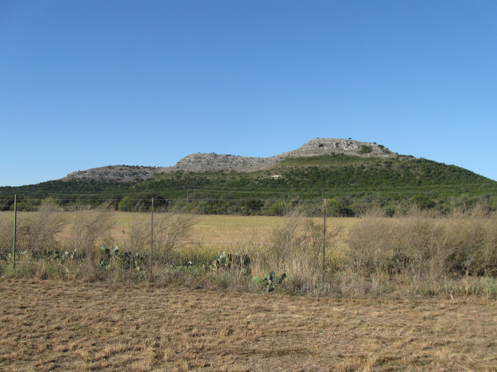
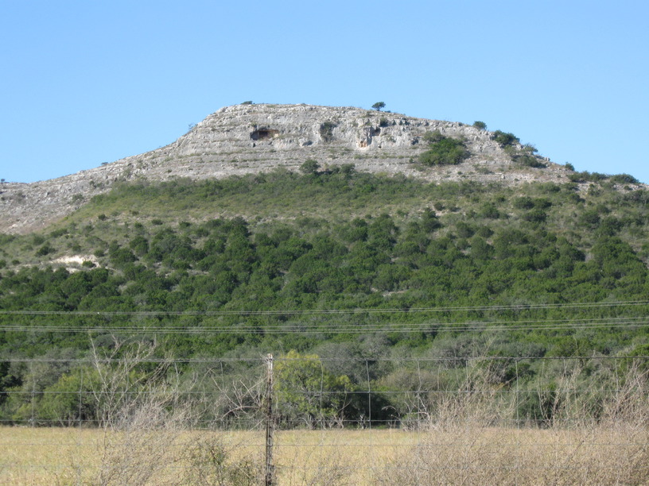
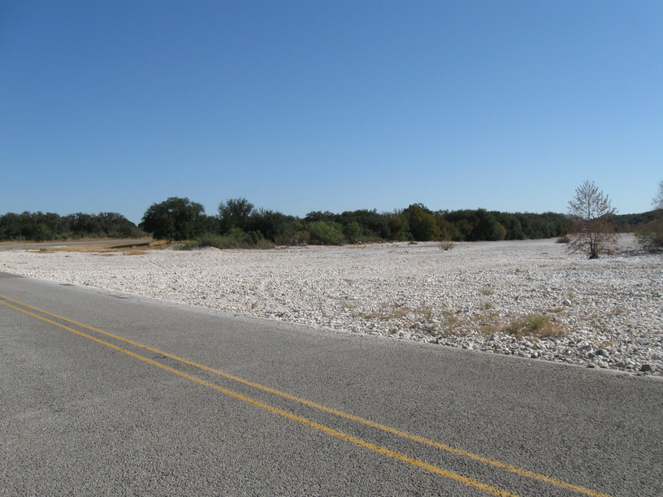
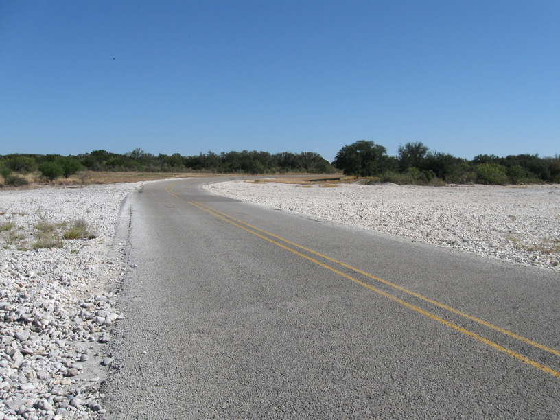

8 Nov 2008, Del Rio, TX
I left Alice's house clean & well-fed this morning. I could tell, though, that my rear tire was low. Since it wasn't totally flat I just pumped it up & kept riding. I've been in ranch country for a while and I've decided that if I ever have the opportunity to name a ranch, it will be the Lazy Icosahedron π Ranch—my geeky play on the Lazy-shape-letter form of most ranch names.
The terrain today was pretty flat, and I pulled into Brackettville for lunch after covering 40 miles without really thinking about it. I left (after having a pretty typical conversation with two motorcyclists: How far each day? and why?) and quickly realized my rear tire was low again. I tried to just top it off, but it quickly was flat, so I finally changed it.
As I headed for Del Rio on US 90, there was a hunter unloading his truck just behind the fence along the road. He asked me something but I had trouble hearing him so I slowed down & then stopped. He came through the gate & we talked for a few minutes. He was decked out in camp & carrying two rifles (a small one for "varmints" & the serious one for deer). We spent a few minutes mutually curious & a bit befuddled by the other's pastime before we parted ways.
I got into Del Rio a bit later than planned & met James, my host via warmshowers.org. He was generous & made me feel right at home. He had to run off to a political celebration, so I set to investigating my rear tire. After fixing some poor patching, deciding to swap the front & back tires, pausing for some dinner, and breaking the valve on a tube & therefore changing it again, James came back & convinced me to go get a drink with him & his friends. Turned out to be the right idea—his friends were fun & interesting people, mostly lawyers & political types, who had for various reasons found their way (back) to Del Rio. Dan & Courtney from Boston wanted to get out of N.E. & came to TX for a public defendant non-profit of some sort. Janae traveled Europe & Africa for 4 months after flying over on a one-way ticket, now applying for the Foreign Service. Cool people.



